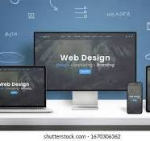

Je suis une développeuse passionnée par le web et une étudiante en
sociologie. Mon parcours académique et professionnel me permet de
combiner des compétences techniques avec une compréhension approfondie
des dynamiques sociales.
Projets
Voici quelques-uns de mes projets en développement web :
Projet 1 : Description du projet 1.
Projet 2 : Description du projet 2.
Projet 3 : Description du projet 3.
Blog
Je partage mes expériences et apprentissages en développement web dans
mon blog :
Article 1
Apprendre à Créer un Site Web Responsive
Par Maimouna
Date : 24 juillet 2024

Dans cet article, je vais partager avec vous comment j'ai appris à
créer un site web responsive. Un site web responsive est un site qui
s'adapte à différentes tailles d'écran, offrant une expérience
utilisateur optimale sur les ordinateurs de bureau, les tablettes et
les smartphones.
Qu'est-ce qu'un Design Responsive ?
Un design responsive utilise des techniques CSS pour ajuster la mise
en page du site web en fonction de la taille de l'écran. Cela
signifie que les éléments de la page, tels que les images, les
textes et les menus, se redimensionnent et se réorganisent
automatiquement pour s'adapter à l'espace disponible.
Les Techniques Clés pour un Design Responsive
1. Utiliser des Media Queries
Les media queries sont des règles CSS qui s'appliquent uniquement
lorsque certaines conditions sont remplies, comme la largeur de
l'écran. Voici un exemple de media query :
@media (max-width: 600px) {
nav a {
float: none;
width: 100%;
text-align: left;
padding-left: 1rem;
}
}
2. Fluid Grids
Les grilles fluides utilisent des pourcentages au lieu de pixels
pour définir les largeurs des éléments. Cela permet aux éléments de
s'ajuster dynamiquement en fonction de la taille de l'écran.
3. Images Flexibles
Les images doivent également être flexibles pour s'adapter à
différentes tailles d'écran. Utilisez la propriété CSS
max-width: 100%; pour garantir que les images ne
dépassent pas la largeur de leur conteneur :
img {
max-width: 100%;
height: auto;
}
Conclusion
Apprendre à créer un site web responsive est essentiel pour tout
développeur web. Cela permet de garantir que votre site offre une
expérience utilisateur optimale, quel que soit l'appareil utilisé
pour le consulter. J'espère que cet article vous a été utile et vous
a donné une meilleure compréhension des concepts de base du design
responsive.
N'hésitez pas à laisser des commentaires ci-dessous si vous avez des
questions ou des suggestions !